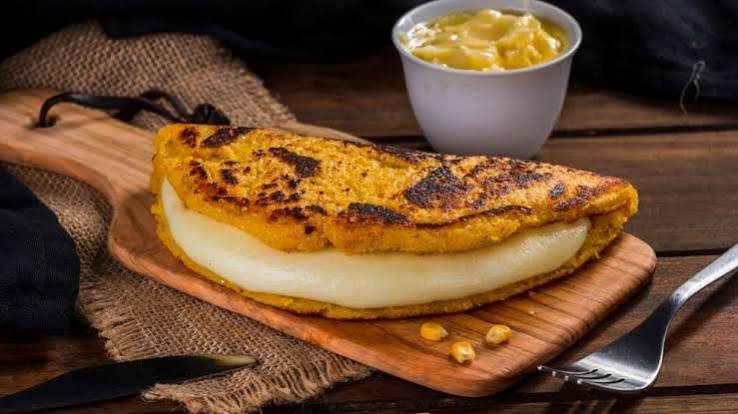

Cachapas con Jamón y Queso

Aprede y conose los Ingredientes y Pasos para preparar unas deliciosas Cachapas al puro estilo Venezolano.
Ingredientes: (para 6 a 8 cachapas).
Utencilios:
Preparación:
- Preparar la mezcla: Coloca en la licuadora el maíz tierno, la leche, la mantequilla derretida, el azúcar, la sal y el huevo. Licúa a velocidad media por lapsos cortos; la idea es obtener una mezcla homogénea pero con cierta textura de granos molidos, no una crema completamente líquida.
- Ajustar la consistencia: Vierte la mezcla en un tazón. Si notas que quedó muy líquida, déjala reposar 10 minutos o añade una cucharada de harina de trigo/maíz para darle mayor consistencia.
- Calentar e imbuir el budare: Pon el budare o sartén a fuego medio-alto hasta que esté bien caliente. Pasa una pizca de mantequilla por la superficie para evitar que se peguen.
- Cocinar la cachapa: Con el cucharón, vierte una porción de mezcla en el centro del budare y extiéndela suavemente con la parte trasera del cucharón formando un círculo de aproximadamente 1 cm de grosor.
- Dora y voltea: Deja cocinar a fuego medio durante 3 a 5 minutos. Sabrás que está lista para voltear cuando se formen burbujas en la superficie y los bordes se vean dorados y secos. Pasa la espátula con firmeza por debajo y voltéala de un solo movimiento. Cocina por el otro lado durante 2 a 3 minutos más.
- Rellenar y servir: Retira la cachapa caliente del budare, úntale un toque de mantequilla fresca en la superficie, coloca las lonjas de jamón y una buena porción de queso de mano doblándola por la mitad para que el calor derrita el queso. Sirve de inmediato.
- Y Desfrute de su Manjar.
Si te consideras una persona más visual aqui te dejo un link que te puede interesar:
Youtube